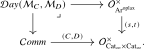
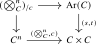
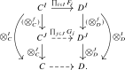

The goal of this section is to construct, under suitable conditions on symmetric monoidal \(\infty \)-categories \(C\) and \(D\), the Day convolution symmetric monoidal structure on \(\Fun (C,D)\). More precisely, we will construct the Day convolution operad \(\oDay (\Mm _C,\Mm _D)\) and determine when it is the multimorphism operad of a symmetric monoidal \(\infty \)-category. If this operad exists, its universal property already determines two of its fundamental features:
- By Lemma 16.1.3, the underlying \(\infty \)-category of \(\oDay (\Mm _C,\Mm _D)\) is the \(\infty \)-category of functors from \(C\) to \(D\): \[ \oDay (\Mm _C,\Mm _D)_{\lra {1}} \quad \simeq \quad \Fun (C,D). \] In particular, the colors of \(\oDay (\Mm _C,\Mm _D)\) may be identified with functors \(C \to D\).
- By Lemma 16.1.4, commutative algebras in \(\oDay (\Mm _C,\Mm _D)\) are lax symmetric monoidal functors from \(C\) to \(D\): \[ \CAlg (\oDay (\Mm _C,\Mm _D)) \quad \simeq \quad \Fun ^{\otimes \text {-lax}}(C,D). \]
To establish existence and determine when this operad defines a symmetric monoidal structure, we will use the concrete model introduced in the next subsection.
All constructions below are understood in an ambient universe containing the symmetric monoidal \(\infty \)-categories under discussion. If \(C\) or \(D\) is large relative to the basic universe, we enlarge once as in Remark 1.8.1 and carry out the construction there. Further enlargement does not change the resulting Day convolution operad, since its universal property is expressed entirely in terms of the same operads and their mapping animae.
16.2.1 The Hinich–Winges model
While the universal property of \(\oDay (\Mm _C,\Mm _D)\) gives us access to some of its abstract properties, it does not provide an explicit description of it. We will make this operad concrete by discussing a model for it given by Hinich (2020). We will follow the ‘synthetic’ exposition of it by Winges (2026).
The main ingredient for this is an explicit description of the unstraightening of the functor \[ (\Cat _{\infty }^{\otimes })\catop \times \Cat _{\infty }^{\otimes } \to \Cat _{\infty }, \qquad (C,D) \mapsto \Fun ^{\otimes \text {-lax}}(C,D). \]
Definition 16.2.1. We denote by \[ \Ar ^{\oplax } \subseteq (\Cat _{\infty })_{/[1]} \] the full subcategory spanned by the cartesian fibrations \(E \to [1]\).
Thus \(\Ar ^{\oplax }\) has the same objects as the ordinary arrow category \(\Ar (\Cat _{\infty })\), but more morphisms. Under cartesian straightening, an object of \(\Ar ^{\oplax }\) corresponds to a functor \([1]\catop \to \Cat _{\infty }\). We write such a functor as \(F\colon C \to D\), with \(C\) as the fiber over \(1\) and \(D\) as the fiber over \(0\). Since the morphisms in \(\Ar ^{\oplax }\) do not need to preserve the cartesian edges, they correspond to laxly commutative squares of the form
Observe that \(\Ar ^{\oplax }\) is closed under finite products in \((\Cat _{\infty })_{/[1]}\), and that pulling back along the inclusions \(\{1\} \hookrightarrow [1]\) and \(\{0\} \hookrightarrow [1]\) provides a finite-product-preserving functor \[ (s,t)\colon \Ar ^{\oplax } \to \Cat _{\infty } \times \Cat _{\infty }. \]
Theorem 16.2.2 (Winges (2026), Theorem 2.7). Let \(\Oo \) be an \(\infty \)-operad, and consider the induced functor \[ (s,t)\colon \Mon _{\Oo }(\Ar ^{\oplax }) \to \Mon _{\Oo }(\Cat _{\infty }) \times \Mon _{\Oo }(\Cat _{\infty }). \] Then:
- (1)
-
The fiber over a pair \((C,D)\) of \(\Oo \)-monoidal \(\infty \)-categories is the \(\infty \)-category \(\Fun ^{\Oo \dlax }(C,D)\) of lax \(\Oo \)-monoidal functors \(C \to D\).
- (2)
-
For fixed \(C\), the restriction of \((s,t)\) to \(\{C\} \times \Mon _{\Oo }(\Cat _{\infty })\) is a cocartesian fibration classifying \[ \Fun ^{\Oo \dlax }(C,-) \colon \Mon _{\Oo }(\Cat _{\infty }) \to \Cat _{\infty }. \]
- (3)
-
For fixed \(D\), the restriction of \((s,t)\) to \(\Mon _{\Oo }(\Cat _{\infty }) \times \{D\}\) is a cartesian fibration classifying \[ \Fun ^{\Oo \dlax }(-,D) \colon \Mon _{\Oo }(\Cat _{\infty })\catop \to \Cat _{\infty }. \]
Remark 16.2.3. Winges in fact shows the stronger claim that this identification of the fibers is natural in both \(C\) and \(D\) simultaneously. Formulating this precisely requires the notion of orthofibrations, which are functors of the form \(E \to C \times D\) that correspond under a generalized form of straightening to functors \(C\catop \times D \to \Cat _{\infty }\). What Winges shows is that the functor \((s,t)\) from Theorem 16.2.2 is the orthofibration classifying the assignment \((C,D) \mapsto \Fun ^{\Oo \dlax }(C,D)\).
With this result at hand, we may now prove the explicit description of \(\oDay (\Mm _C,\Mm _D)\):
Theorem 16.2.4 (Hinich (2020), Proposition 2.8.9, Winges (2026), Theorem 1.1). Let \(C\) and \(D\) be symmetric monoidal \(\infty \)-categories, which we identify with commutative algebras in \(\Cat _{\infty }\) with the cartesian monoidal structure. Then the Day convolution operad \(\oDay (\Mm _C,\Mm _D)\) exists, and is given by the following pullback square:

Proof. Let us write \(\Dd \) for this pullback. We will show directly that \(\Dd \) satisfies the defining universal property of \(\oDay (\Mm _C,\Mm _D)\). It will suffice to produce for any \(\infty \)-operad \(\Pp \) a natural equivalence \[ \Fun _{\Op _{\infty }}(\Pp ,\Dd ) \simeq \Fun _{\Op _{\infty }}(\Pp \times \Mm _C, \Mm _D). \] For the left-hand side, note that \(\Fun _{\Op _{\infty }}(\Pp ,-)\) commutes with pullbacks. Since \(\Comm \) is the terminal \(\infty \)-operad, we have \(\Fun _{\Op _{\infty }}(\Pp ,\Comm ) \simeq *\). Since operad morphisms from \(\Pp \) into a cartesian operad correspond to \(\Pp \)-monoids by Theorem 15.3.11, we obtain equivalences \[ \hspace {-5pt} \Fun _{\Op _{\infty }}(\Pp ,\OpCart _{\Ar ^{\oplax }}) \simeq \Mon _{\Pp }(\Ar ^{\oplax }), \qquad \Fun _{\Op _{\infty }}(\Pp ,\OpCart _{\Cat _{\infty } \times \Cat _{\infty }}) \simeq \Mon _{\Pp }(\Cat _{\infty } \times \Cat _{\infty }). \] It follows that the \(\infty \)-category \(\Fun _{\Op _{\infty }}(\Pp ,\Dd )\) is equivalent to the fiber of the map \[ \Mon _{\Pp }(\Ar ^{\oplax }) \to \Mon _{\Pp }(\Cat _{\infty }) \times \Mon _{\Pp }(\Cat _{\infty }) \] over the pair \((C_{\Pp },D_{\Pp })\), where \(C_{\Pp }\) and \(D_{\Pp }\) are obtained from \(C\) and \(D\) by precomposition with the operad map \(p_{\Pp }\colon \Pp \to \Comm \). By Theorem 16.2.2, this fiber is the \(\infty \)-category \(\Fun ^{\Pp \dlax }(C_{\Pp },D_{\Pp }) = \Fun _{(\Op _{\infty })_{/\Pp }}(\Mm _{C_{\Pp }/\Pp }, \Mm _{D_{\Pp }/\Pp })\) of lax \(\Pp \)-monoidal functors \(C_{\Pp } \to D_{\Pp }\). By the definition of \(C_{\Pp }\) and \(D_{\Pp }\) we have \[ \Mm _{C_{\Pp }/\Pp } \simeq \Pp \times _{\Comm } \Mm _C \qquadtext { and } \Mm _{D_{\Pp }/\Pp } \simeq \Pp \times _{\Comm } \Mm _D, \] hence \[ \hspace {-6pt} \Fun _{(\Op _{\infty })_{/\Pp }}(\Mm _{C_{\Pp }/\Pp }, \Mm _{D_{\Pp }/\Pp }) \simeq \Fun _{(\Op _{\infty })_{/\Pp }}(\Pp \times _{\Comm } \Mm _C, \Pp \times _{\Comm } \Mm _D) \simeq \Fun _{\Op _{\infty }}(\Pp \times _{\Comm } \Mm _C, \Mm _D), \] where the second equivalence uses the universal property of pullbacks. Since \(\Comm \) is terminal, the fiber product \(\Pp \times _{\Comm }\Mm _C\) is the product \(\Pp \times \Mm _C\) in \(\Op _{\infty }\). This was precisely what we wanted to show. □
Remark 16.2.5. The above description of \(\oDay (\Mm _C,\Mm _D)\) immediately generalizes to a description of the \(\Oo \)-monoidal Day convolution operad \(\oDay _{/\Oo }(\Mm _{C/\Oo }, \Mm _{D/\Oo }) \in (\Op _{\infty })_{/\Oo }\) for \(\Oo \)-monoidal \(\infty \)-categories \(C\) and \(D\). The proof is essentially identical, up to replacing \(\Op _{\infty }\) with \((\Op _{\infty })_{/\Oo }\) everywhere. It is this generality in which Hinich and Winges state and prove the result. Note that Theorem 16.2.2, the principal external input about Day convolution, is already stated for an arbitrary \(\infty \)-operad \(\Oo \).
Concretely, the universal property reads \[ \Fun _{(\Op _{\infty })_{/\Oo }}\bigl (\Qq , \oDay _{/\Oo }(\Mm _{C/\Oo },\Mm _{D/\Oo })\bigr ) \quad \simeq \quad \Fun _{(\Op _{\infty })_{/\Oo }}\bigl (\Qq \times _{\Oo } \Mm _{C/\Oo }, \Mm _{D/\Oo }\bigr ) \] for every \(\infty \)-operad \(\Qq \) over \(\Oo \). Moreover, since both sides are described by the same pullback square, base change along an operad map \(\Oo \to \Comm \) identifies \[ \Oo \times _{\Comm } \oDay (\Mm _C,\Mm _D) \quad \simeq \quad \oDay _{/\Oo }(\Mm _{C/\Oo },\Mm _{D/\Oo }). \] In other words, the underlying \(\Oo \)-monoidal \(\infty \)-category of the Day convolution is the \(\Oo \)-monoidal Day convolution. For \(\Oo =\Assoc \), this is the relative version underlying the final assertion of Observation 16.6.7, where the relevant functor is lax monoidal but not lax symmetric monoidal.
As a consequence of this result, we may explicitly compute the multimorphism animae of \(\oDay (\Mm _C,\Mm _D)\):
Proposition 16.2.6. Let \(C\) and \(D\) be symmetric monoidal \(\infty \)-categories, let \(I\) be a finite set, and let \(\{F_i\colon C \to D\}_{i \in I}\) and \(G\colon C \to D\) be functors. Then there is an equivalence \[ \oDay (\Mm _C,\Mm _D)(\{F_i\}_{i \in I}; G) \simeq \Nat \left ( \bigotimes _D^I \circ \prod _{i \in I} F_i, G \circ \bigotimes _C^I \right ) \] between the anima of multimorphisms \(\{F_i\}_{i \in I} \to G\) in the Day convolution operad and the anima of natural transformations \(\alpha \) fitting in the following diagram:

Proof. Let us write \(\Oo := \oDay (\Mm _C, \Mm _D)\) for simplicity. By definition, the anima of multimorphisms \(\Oo (\{F_i\}_{i \in I}; G)\) is the fiber of the projection map \[ p_{\Oo }\colon \Hom _{\Oo ^{\otimes }}(\{F_i\}_{i \in I}, G) \to \Hom _{\Span (\Fin )}(I, \lra {1}) \] over the active span \(I \xleftarrow {\;\id \;} I \to \lra {1}\). By Theorem 16.2.4, the operad \(\Oo \) sits in the following pullback square of \(\infty \)-operads:

Since hom animae in a pullback of \(\infty \)-categories form a pullback of animae, \(\Hom _{\Oo ^{\otimes }}(\{F_i\}_{i \in I}, G)\) is itself
the fiber in a pullback square of hom animae. Taking the fibers of these hom animae over the
active span \(I \to \lra {1}\), we find that \(\Oo (\{F_i\}_{i \in I}; G)\) is the fiber in the following pullback square of animae: \begin {equation*} 

By applying Theorem 16.2.2 to the trivial \(\infty \)-operad, we get that the functor \((s,t)\colon \Ar ^{\oplax } \to \Cat _{\infty } \times \Cat _{\infty }\) is a cartesian fibration over \(\Cat _{\infty } \times \{D\}\) and a cocartesian fibration over \(\{C\} \times \Cat _{\infty }\). The fibers of \((s,t)\) are given by the functor categories \(\Fun (C,D)\), with functoriality in \(C\) given by precomposition and functoriality in \(D\) given by postcomposition. The fiber of the upper-right hom anima over a pair \((f,g)\) is therefore the anima of natural transformations \(g\circ \prod _iF_i\to G\circ f\). In particular, Equation 16.1 identifies the required fiber as \[ \Oo (\{F_i\}_{i \in I}; G) \simeq \Hom _{\Fun (C^I,D)}(\bigotimes _D^I \circ \prod _{i \in I} F_i, G \circ \bigotimes _C^I), \] as claimed. □
16.2.2 The Day convolution monoidal structure
With the explicit description of the multimorphism animae of \(\oDay (\Mm _C,\Mm _D)\) at hand, we may now return to the question of when this \(\infty \)-operad corresponds to a symmetric monoidal structure on the functor category \(\Fun (C,D)\):
Proposition 16.2.7 (Lurie (2017), Proposition 2.2.6.16, Winges (2026), Proposition 4.1). Let \((C, \otimes _C, \unit _C)\) and \((D, \otimes _D, \unit _D)\) be symmetric monoidal \(\infty \)-categories. Let \(\Kk \) be the collection of all relative slice categories \((\bigotimes _C^n)_{/c}\) defined by the pullback squares

for every natural number \(n \geq 0\) and every object \(c \in C\). Assume that the following two conditions are satisfied:
- (1)
-
The \(\infty \)-category \(D\) admits all \(\Kk \)-indexed colimits.
- (2)
-
The tensor product functor \(\otimes _D\colon D \times D \to D\) preserves \(\Kk \)-indexed colimits in each variable separately.
Then the Day convolution operad \(\oDay (\Mm _C,\Mm _D)\) defines a symmetric monoidal structure \(\otimes _{\Day }\) on \(\Fun (C,D)\).
In practice, we will usually apply Proposition 16.2.7 through the following corollary, so we record it before proving the proposition.
Corollary 16.2.8. Let \(C\) and \(D\) be symmetric monoidal \(\infty \)-categories. Assume that \(C\) is small, that \(D\) is cocomplete (i.e., admits all small colimits), and that the tensor product of \(D\) preserves small colimits in each variable. Then the Day convolution operad \(\oDay (\Mm _C,\Mm _D)\) defines a symmetric monoidal structure \(\otimes _{\Day }\) on \(\Fun (C,D)\).
Proof. Every relative slice category \((\bigotimes _C^n)_{/c}\) is a pullback of the diagram \(C^n \to C \times C \leftarrow \Ar (C)\). Since \(C\) is small, so are \(C^n\) and \(\Ar (C)\), and hence so is \((\bigotimes _C^n)_{/c}\). The collection \(\Kk \) of Proposition 16.2.7 therefore consists of small \(\infty \)-categories, so both of its conditions are implied by the assumptions on \(D\). □
Proof of Proposition 16.2.7. We wish to show that the Day convolution operad \(\Oo := \oDay (\Mm _C, \Mm _D)\) defines a symmetric monoidal \(\infty \)-category, i.e., that the functor \(p_{\Oo }\colon \Oo ^{\otimes } \to \Span (\Fin )\) is a cocartesian fibration. Recall from Lemma 14.2.8 that it is enough to show that the following two conditions are satisfied:
- (a)
-
For every finite collection of functors \(\{F_i\}_{i \in I}\), there exists a functor \(G = \bigotimes _{i \in I}^{\Day } F_i\) and a multimorphism \(\{F_i\}_{i \in I} \to G\) in \(\Oo \) inducing for every other functor \(H\colon C \to D\) an equivalence \[ \Hom _{\Oo _{\lra {1}}}(G,H) \iso \Oo (\{F_i\};H). \]
- (b)
-
For a map \(f\colon I \to J\) of finite sets, if we let \(G_j := \bigotimes _{i \in f^{-1}(j)}^{\Day } F_i\) for all \(j \in J\), then the canonical map \[ \bigotimes _{i \in I}^{\Day } F_i \to \bigotimes _{j \in J}^{\Day } G_j \] is a natural isomorphism of functors \(C \to D\).
For part (a), we define \(G\) as the left Kan extension of the composite functor \[ \prod _{i \in I} C \xrightarrow {\prod _{i \in I} F_i} \prod _{i \in I} D \xrightarrow {\otimes _D} D \] along the tensor product functor \(\otimes _C\colon C^I \to C\). Explicitly, for an object \(c \in C\), its value is given by the colimit: \[ G(c) := \colim _{\{c'_i\}_{i \in I} \in (\bigotimes _C^I)_{/c}} \left ( \bigotimes _{i \in I} F_i(c'_i) \right ). \] The existence of this left Kan extension is guaranteed by condition (1) of our hypothesis, as the indexing category \((\bigotimes _C^I)_{/c}\) is in our collection \(\Kk \). The universal property of this left Kan extension provides a natural transformation \[ \eta \colon \bigotimes _D^I \circ \prod _{i \in I} F_i \Longrightarrow G \circ \bigotimes _C^I, \] which by Proposition 16.2.6 corresponds to a multimorphism \(\eta \colon \{F_i\}_{i \in I} \to G\) in \(\Oo \). The universal property of left Kan extension precisely says that for any other functor \(H\colon C \to D\), composition with \(\eta \) induces an equivalence \[ \Hom _{\Oo _{\lra {1}}}(G,H) \simeq \Nat (G, H) \iso \Nat \left ( \bigotimes _D^I \circ \prod _{i \in I} F_i, H \circ \bigotimes _C^I \right ) \simeq \Oo (\{F_i\}_{i \in I};H), \] as desired.
We now show that also (b) holds. Let \(f\colon I \to J\) be a map in \(\Fin \), and write \(G_j := \bigotimes _{i \in f^{-1}(j)}^{\Day } F_i\) for all \(j \in J\). We need to show that the canonical transformation \[ \bigotimes _{i \in I}^{\Day } F_i \to \bigotimes _{j \in J}^{\Day } G_j \] is a natural isomorphism of functors \(C \to D\). To help visualize this, consider the following diagram:

Since left Kan extensions compose, it will suffice to show that the composite \(\bigotimes _D^J \circ \prod _{j \in J} G_j\colon C^J \to D\) is the left Kan extension of the composite \(\bigotimes _D^I \circ \prod _{i \in I} F_i \colon C^I \to D\) along \((\bigotimes _C^f)\colon C^I \to C^J\). By the pointwise formula for Kan extensions, this amounts to showing that for every tuple \((c_j)_{j \in J} \in C^J\), the map \[ \colim _{(c'_i) \in (\bigotimes _C^f)_{/c}} \bigotimes _{i \in I}^D F_i(c'_i) \to \bigotimes _{j \in J} G_j(c_j) \] is a natural isomorphism. Since the functor \(\bigotimes _C^f\colon C^I \to C^J\) is a product of the individual functors \(\bigotimes _C^{I_j}\colon C^{I_j} \to C\), the indexing category \((\bigotimes _C^f)_{/c}\) on the left is a product over \(j \in J\) of the relative slice categories \((\bigotimes _C^{I_j})_{/c_j}\). But we also have \[ G_j(c_j) = \colim _{(c''_i) \in (\bigotimes _C^{I_j})_{/c_j}} \bigotimes _{i \in I_j}^D F_i(c''_i), \] and since the functor \(\bigotimes _{j \in J}^D\colon D^J \to D\) preserves the relevant colimits in each variable separately it follows that the map is a natural isomorphism. This finishes the proof. □
Remark 16.2.9. The proof of the proposition provides an explicit description of the tensor product functor \[ \bigotimes _{\Day }^I\colon \Fun (C,D)^I \to \Fun (C,D) \] for every finite set \(I\). For \(I = \lra {0}\) and \(I = \lra {2}\), this specializes as follows:
- The monoidal unit \(\unit _{\Day }\colon C \to D\) of the Day convolution monoidal structure is the left Kan extension of \(\unit _D\colon * \to D\) along \(\unit _C\colon * \to C\).
- The Day convolution \(F \otimes _{\Day } G\) of two functors \(F,G\colon C \to D\) is the left Kan extension of \(C \times C \xrightarrow {F \times G} D \times D \xrightarrow {\otimes _D} D\) along \(\otimes _C\colon C \times C \to C\).
Proposition 16.2.10 (Functoriality of monoidal Day convolution). Assume the relevant Day convolution monoidal structures exist.
- (1)
-
A lax symmetric monoidal functor \(u\colon C'\to C\) induces a lax symmetric monoidal precomposition functor \[ u^*\colon \Fun (C,D)\longrightarrow \Fun (C',D). \]
- (2)
-
Let \(\Kk \) be the collection of relative slice categories from Proposition 16.2.7. If \(v\colon D\to D'\) is symmetric monoidal and preserves \(\Kk \)-indexed colimits, then postcomposition induces a symmetric monoidal functor \[ v_*\colon \Fun (C,D)\longrightarrow \Fun (C,D'). \]
Proof. Part (1) is induced by precomposition on Day convolution operads. For part (2), postcomposition first gives a lax symmetric monoidal refinement. Since \(v\) is symmetric monoidal and preserves the colimits in the pointwise formulas of Remark 16.2.9, it carries each Day convolution product and the Day convolution unit to the corresponding product and unit in \(\Fun (C,D')\). Its structure maps are therefore isomorphisms. □
Lemma 16.2.11 (Left Kan extensions and Day convolution). Let \(u\colon A\to B\) be a symmetric monoidal functor, and let \(D\) be a symmetric monoidal \(\infty \)-category. Assume that the Day convolution monoidal structures on \(\Fun (A,D)\) and \(\Fun (B,D)\) exist. Suppose that for every object \(b\in B\), the \(\infty \)-category \(D\) admits colimits indexed by the relative slice category \(u_{/b}\), and that its tensor product preserves these colimits separately in each variable. Then pointwise left Kan extension along \(u\) defines a symmetric monoidal functor \[ u_!\colon \Fun (A,D)\longrightarrow \Fun (B,D). \] In particular, this applies when \(A\) and \(B\) are small, while \(D\) is cocomplete and its tensor product preserves small colimits separately in each variable.
Proof. The hypotheses on the relative slice categories ensure that pointwise left Kan extension along \(u\) exists. Its right adjoint \(u^*\) is lax symmetric monoidal by Proposition 16.2.10. By Proposition 14.3.11, it therefore suffices to show that for every finite collection of functors \(F_i\colon A\to D\), indexed by a finite set \(I\), the canonical comparison \[ u_!\bigl (\bigotimes _{i\in I}^{\Day }F_i\bigr ) \longrightarrow \bigotimes _{i\in I}^{\Day }u_!(F_i) \] is an isomorphism.
Set \[ H:=\bigotimes _D^I\circ \prod _{i\in I}F_i\colon A^I\to D. \] By the description of Day convolution in Remark 16.2.9 and the composition law for left Kan extensions, the source of the comparison is the left Kan extension of \(H\) along \[ A^I\xrightarrow {\smash {\bigotimes _A^I}}A\xrightarrow {u}B. \] On the other hand, the pointwise formula for left Kan extensions and the assumptions on the tensor product of \(D\) show that \[ \bigotimes _D^I\circ \prod _{i\in I}u_!(F_i)\colon B^I\to D \] is the left Kan extension of \(H\) along \(u^I\colon A^I\to B^I\): the relative slice of \(u^I\) over a tuple \((b_i)_{i\in I}\) is the product of the relative slices \(u_{/b_i}\), and its colimit may be computed iteratively. Applying Day convolution and composing left Kan extensions therefore identifies the target of the comparison with the left Kan extension of \(H\) along \[ A^I\xrightarrow {u^I}B^I\xrightarrow {\smash {\bigotimes _B^I}}B. \] Since \(u\) is symmetric monoidal, these two composite functors are naturally equivalent. The canonical comparison is therefore an isomorphism, as desired. □
As a basic instance of Corollary 16.2.8, we obtain:
Corollary 16.2.12. Let \(C\) be a small symmetric monoidal \(\infty \)-category. Then the functor category \(\Fun (C,\An )\) admits a symmetric monoidal structure via Day convolution.
Proof. The cited corollary applies since \(\An \) admits small colimits and the functor \(- \times -\colon \An \times \An \to \An \) preserves colimits in both variables. □
For later use, we record the following description of the internal hom for Day convolution.
Proposition 16.2.13. Let \(C\) be a small symmetric monoidal \(\infty \)-category and let \(D\) be a complete closed symmetric monoidal \(\infty \)-category for which the Day convolution symmetric monoidal structure on \(\Fun (C,D)\) exists. Then this symmetric monoidal structure is closed. Its internal hom is pointwise given by the end formula \[ \iHom _{\Fun (C,D)}(F,G)(X) \simeq \int _{Y \in C} \iHom _D(F(Y), G(X \otimes _C Y)). \] Here the integral denotes the end of Definition 23.6.3.
Proof. It suffices to show that for every third functor \(H\colon C \to D\) there is a natural equivalence \[ \Nat (H \otimes _{\Day } F, G) \simeq \Nat \left (H, \int _{Y \in C} \iHom _D(F(Y), G(- \otimes _C Y))\right ). \] Since the Day convolution is a left Kan extension, the left-hand side is equivalent to the anima \[ \Nat (H(-) \otimes _D F(-), G(- \otimes _C -)) \] of natural transformations of functors \(C \times C \to D\). By Proposition 23.6.6, this anima is the end \[ \int _{(X,Y) \in C \times C} \Hom _D(H(X) \otimes _D F(Y), G(X \otimes _C Y)). \] Using the Fubini rule for ends, Lemma 23.6.5, the adjunction \(- \otimes _D F(Y) \dashv \iHom _D(F(Y),-)\), and the fact that \(\Hom _D(H(X),-)\) preserves limits, we may rewrite this as \begin {align*} \int _{X \in C} &\int _{Y \in C} \Hom _D(H(X), \iHom _D(F(Y), G(X \otimes _C Y))) \\ &\simeq \int _{X \in C} \Hom _D\left (H(X), \int _{Y \in C} \iHom _D(F(Y), G(X \otimes _C Y))\right ). \end {align*}
Using the end description of animae of natural transformations once more gives the desired result. □
Generated from the authoritative LaTeX source.